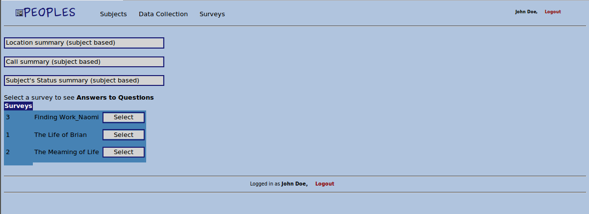

|
Computer Science 333
Advanced Programming Techniques
PEOPLES User Guide
|
Spring 2011
|
Web Site User Guide
* Before starting to use the web site: be sure you have an account to login the system.
You can access the web site from: http://www.eigendiego.com/cake/app/webroot/
Contents:
- When you type the web address into you browser, the first page that you will see is the following page:
-
Enter the user-name and password that you get from the administrator of the web site. Then press the the 'Login' button.
-
If you login successfully, you will see the Welcome Page. Otherwise, if you're sure that you entered the user-name and password correctly you should contact with administrator.
-
When you are done, we strongly recommend you to logout. To logout, just press the 'Logout' button which is placed at the right-top corner and middle-bottom of the page.
Back to top
-
To see, edit, delete current recorded subjects, or to add a new subject you should click 'Subjects' tab on the welcome page.
- When you choose the Subjects tab, you will see a page something like following page:
-
Search: You can search a subject according to first name, last name, phone number, or device id or combinations of those.
You can easily find subjects that you want to see.
-
Subject information: Right below the search part, you can see the list of the subjects and their information (name, surname, phone number, device id).
-
Edit: There is a 'Edit' button at the right side of each subject, if you press this button you will see current information of the subject and you can edit it easily.
-
Delete: There is a 'Delete' button at the right side of each subject to delete corresponding subject.
-
Add new subject: There is a 'Add Subject' button at the bottom of the list. When you press the 'Add Subject' button you will see a page like search form, you can fill necessary fields. When you are done, just press 'Create' button to add a new subject.
Back to top
*If you have administrator privileges you can use this tool.
-
To see, edit, delete current web site users(researchers) you can click 'Users' tab on the top of the page.
-
User information: You can see the list of the current users and their information (name, surname, user-name, email etc.).
-
Edit: There is a 'Edit' button at the right side of each user, if you press this button you will see current information of the user and you can edit it easily. You can change user's password, email address etc.
-
Delete: There is a 'Delete' button at the right side of each user to delete corresponding user.
-
Add new user: There is a 'Add User' button at the bottom of the list. When you press the 'Add User' button you will see a form, and you can fill necessary fields. When you are done, just press 'Create' button to add a new user.
Back to top
-
To see, edit, delete current recorded surveys, or to add a new survey you should click 'Surveys' tab on the welcome page.
- When you choose the 'Surveys' tab, you will see a page something like following page:
-
Survey information: On the surveys page, you will see the list of surveys, and you press the edit button you can see other information.
-
Edit: There is a 'Edit' button at the right side of each survey, if you press this button you will see current information(survey name, id of the first question of the survey, times when the survey will send to users) of the survey and you can edit it.
*When you create a new survey, after you add new questions to the survey, don't forget to give the id of the first question to the survey by the editing survey.
-
Delete: There is a 'Delete' button at the right side of each survey to delete corresponding survey.
-
Add new survey: There is a 'Add Survey' button at the bottom of the list. When you press the 'Add Survey' button you will see a form that you can enter the name of the new survey. When you are done, just press 'Add' button to add a new survey.
-
Select(fill the survey): There is a 'Select' button at the right side of each survey to open the corresponding survey page. A sample survey page is following:
-
Add Question: There is a 'Add Question' button at the bottom of the questions list. To enter new question, press this button and enter the question text.
-
Add Choices: There is a 'Choices' button at the right side of each question. When you click to the this button you will see existing choices if there is any. To enter a new choice, press 'Add Choice' button and enter the choice text. If you don't enter any choice this means your question is free-response question by default. Also you can edit or delete choices by pressing related button next to the choice.
-
Create Branches: There is a 'Branches' button at the right side of each question. When you click to the this button you will see existing branches if there is any. To enter a new branch, press 'Add Branch' button and enter the next question id. This branch can be thought as an arrow pointing from one question to another. Also you can edit or delete branches by pressing related button next to the branch.
-
Add Condition to the Branch: There is a 'Conditions' button at the right side of each branch. When you click to the this button you will see existing condition if there is one. To enter a new condition, press 'Add Condition' button and enter the question id that you want to put condition on it, condition which on the choice, and the choice that is supposed to be chosen on the last survey in order to activate this branch. If you don't enter any condition this means no matter which choice subject chooses next question is certain. Also you can edit or delete conditions by pressing related button next to the condition.
Back to top
-
To see and export collected as a spread sheet, you should select "Data Collection" tab on the welcome page.
- When you choose the "Data Collection" tab, you will a page something like the following page:

-
Location Summary: This button redirects you a page which lists all current subjects. If you choose one of them, you will see the all GPS information as a list. And if you want to export this list as a spread-sheet, there is a 'Export as xls' button at the end of the list.
-
Call-log Summary: This button redirects you a page which lists all current subjects. If you choose one of them, you will see the all call-log information as a list. On the list all cantacts will appear with their unique id. There is no information on the database about what the contact phone number is. On the list, there is a call type column which indicates that 0 means outgoing call, 1 means incoming call, 2 means outgoing text, 3 means incoming text. And if you want to export this list as a spread-sheet, there is a 'Export as xls' button at the end of the list.
-
Device Status: This page will list the changes in devis statuses of all subjects. There are 4 features that a subject can enable or disable, and these are indicated with numbers(0 for gps, 1 for call log, 2 for text log, 3 for all application). And if you want to export this list as a spread-sheet, there is a 'Export as xls' button at the end of the list.
-
Answers to Questions: First of all, you should select a survey that you want to see the answers of. Then you will see the list of all questions of the survey that you selected. Then you can choose one of the questions to see the list of answers of subjects to this question. And if you want to export this list as a spread-sheet, there is a 'Export as xls' button at the end of the list.
Back to top